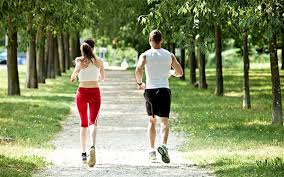

Fogyni lehet testmozgással és diétázással is.
A testmozgással gyorsabban lehet fogyni de nagyobb erőbefektetés kell hozzá mint a diétázáshoz.
A diétézáshoz pedig nagyobb akaraterő kell hogy egyes ételek csábításának ellen tudj álni.
És lehet a testmozgást meg a diétázást együtt is csinálni és annak van a legnagyobb hatása, és ez az egyik legyorsabb természetes fogyási lehetőség is.
